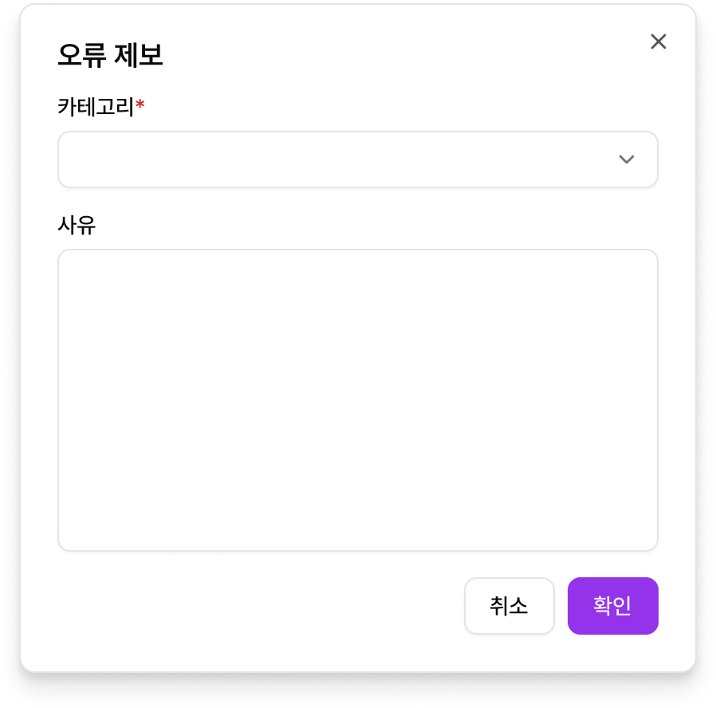

피드백 제출
1) 오류 제보 버튼
- 화면 우측의 오류 제보 버튼을 눌러 오류를 제보할 수 있습니다.
- 이 버튼은 2025년 8월 기준 검수용으로만 활용될 예정입니다.
- 1개의 이슈에 대해서 여러 번 오류를 제보할 수 있습니다.

2) 카테고리 선택
- 감점 사유 오류 : 감점 사유에 오류가 있다면 선택해주세요
- 개선 제안 오류 : 개선 제안부분에 오류가 있다면 선택해주세요.
- 감점 구간 오류 : 감점 구간에 오류가 있다면 선택해주세요.
- STT 오류 : STT 오류로 인한 오답인 경우 선택해주세요

3) 오류 제보 사유(선택입력)
- 주관식 입력 칸입니다.
- 검수자들이 입력해야 하는 양식은 별도로 안내될 예정입니다.